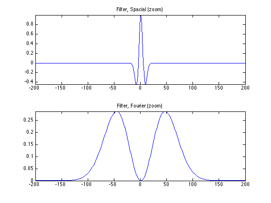
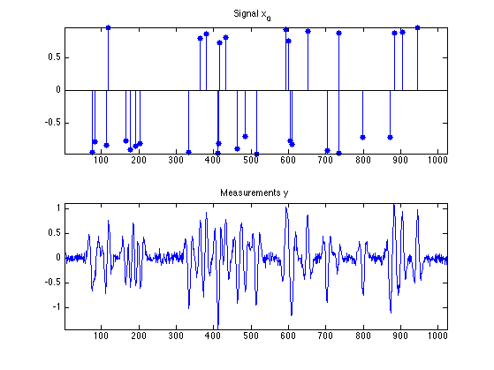
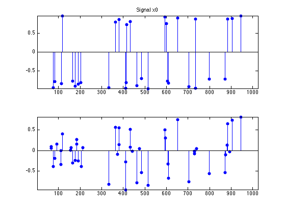
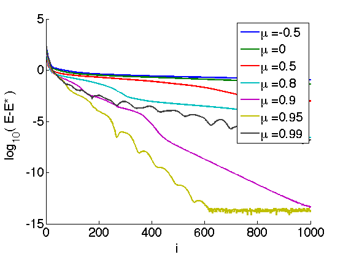
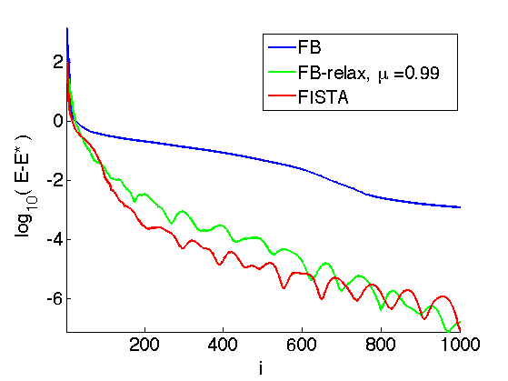

Forward-Backward Proximal Splitting
This numerical tour presents the Forward-Backward (FB) algorithm to minimize the sum of a smooth and a simple function. It shows an application to sparse-spikes deconvolution.
Contents
Installing toolboxes and setting up the path.
You need to download the following files: signal toolbox and general toolbox.
You need to unzip these toolboxes in your working directory, so that you have toolbox_signal and toolbox_general in your directory.
For Scilab user: you must replace the Matlab comment '%' by its Scilab counterpart '//'.
Recommandation: You should create a text file named for instance numericaltour.sce (in Scilab) or numericaltour.m (in Matlab) to write all the Scilab/Matlab command you want to execute. Then, simply run exec('numericaltour.sce'); (in Scilab) or numericaltour; (in Matlab) to run the commands.
Execute this line only if you are using Matlab.
getd = @(p)path(p,path); % scilab users must *not* execute this
Then you can add the toolboxes to the path.
getd('toolbox_signal/'); getd('toolbox_general/');
Bibliography
Excellent review papers on proximal splitting algorithms include:
Amir Beck and Marc Teboulle, Gradient-Based Algorithms with Applications to Signal Recovery Problems, in "Convex Optimization in Signal Processing and Communications". Editors: Yonina Eldar and Daniel Palomar. Cambridge university press.
P. L. Combettes and J.-C. Pesquet, Proximal splitting methods in signal processing, in: Fixed-Point Algorithms for Inverse Problems in Science and Engineering, (H. H. Bauschke, R. S. Burachik, P. L. Combettes, V. Elser, D. R. Luke, and H. Wolkowicz, Editors), pp. 185-212. Springer, New York, 2011.
Forward-Backward Algorithm
We consider the problem of minimizing the sum of two functions \[ E^\star \umin{x \in \RR^N} E(x) = f(x) + g(x). \]
We assume that \(f\) is a \(C^1\) function with \(L\)-Lipschitz gradient, which means that \[ \forall (x,y) \in \RR^N \times \RR^N, \quad \norm{\nabla f(x) - \nabla f(y)} \leq L \norm{x-y}. \]
We also assume that \(g\) is "simple", in the sense that one can compute in closed form the so-called proximal mapping, which is defined as \[ \text{prox}_{\ga g}(x) = \uargmin{y \in \RR^N} \frac{1}{2}\norm{x-y}^2 + \ga g(y). \] for any \(\ga > 0\).
The FB algorithm reads, after initilizing \(x^{(0)} \in \RR^N\), \[ x^{(\ell+1)} = \text{prox}_{\ga g}\pa{ x^{(\ell)} - \ga \nabla f( x^{(\ell)} ) }. \]
If \(0 < \ga < 2/L\), then this scheme converges to a minimizer of \(f+g\).
Sparse Regularization of Inverse Problems
We consider a linear inverse problem \[ y = \Phi x_0 + w \in \RR^P\] where \(x_0 \in \RR^N\) is the (unknown) signal to recover, \(w \in \RR^P\) is a noise vector, and \(\Phi \in \RR^{P \times N}\) models the acquisition device.
To recover an approximation of the signal \(x_0\), we use the Basis Pursuit denoising method, that use the \(\ell^1\) norm as a sparsity enforcing penalty \[ \umin{x \in \RR^N} \frac{1}{2} \norm{y-\Phi x}^2 + \la \norm{x}_1, \] where the \(\ell^1\) norm is defined as \[ \norm{x}_1 = \sum_i \abs{x_i}. \]
The parameter \(\la\) should be set in accordance to the noise level \(\norm{w}\).
This minimization problem can be cast in the form of minimizing \(f+g\) where \[ f(x) = \frac{1}{2} \norm{y-\Phi x}^2 \qandq g(x) = \la \norm{x}_1. \]
\(f\) is a smooth function, which satisfies \[ \nabla f(x) = \Phi^* (\Phi x - y), \] it has a \(L\)-Lipschitz gradient with \[ L = \norm{ \Phi^* \Phi }. \]
The \(\ell^1\)-norm is "simple", because its proximal operator is a soft thresholding: \[ \text{prox}_{\ga g}(x)_k = \max\pa{ 0, 1 - \frac{\la \ga}{\abs{x_k}} } x_k. \]
Signal Deconvolution Problem on Synthetic Sparse Data
A simple linearized model of seismic acquisition consider a linear operator which is a filtering \[ \Phi x = \phi \star x \]
Dimension of the problem.
N = 1024;
We load a seismic filter \(\phi\), which is a second derivative of a Gaussian.
Width of the filter.
s = 5;
Second derivative of Gaussian.
t = (-N/2:N/2-1)'; h = (1-t.^2/s^2).*exp( -(t.^2)/(2*s^2) ); h = h-mean(h);
Define the operator \(\Phi\).
h1 = fftshift(h); % Recenter the filter for fft use.
Phi = @(u)real(ifft(fft(h1).*fft(u)));
Display the filter and its Fourier transform.
% Fourier transform (normalized) hf = real(fftshift(fft(h1))) / sqrt(N); % display q = 200; clf; subplot(2,1,1); plot(-N/2+1:N/2, h); axis([-q q min(h) max(h)]); title('Filter, Spacial (zoom)'); subplot(2,1,2); plot(-N/2+1:N/2, hf); axis([-q q 0 max(hf)]); title('Filter, Fourier (zoom)');
We generate a synthetic sparse signal \(x_0\), with only a small number of non zero coefficients.
Number of Diracs of the signal.
s = round(N*.03);
Set the seed-number (for reproductibility).
rand('state', 1); randn('state', 1);
Location of the diracs.
sel = randperm(N); sel = sel(1:s);
Signal \(x_0\).
x0 = zeros(N,1); x0(sel) = 1; x0 = x0 .* sign(randn(N,1)) .* (1-.3*rand(N,1));
Noise level.
sigma = .06;
Compute the measurements \(y=\Phi x_0 + w\) where \(w\) is a realization of a Gaussian white noise of variance \(\si^2\).
y = Phi(x0) + sigma*randn(N,1);
Display signals and measurements.
clf; ms = 20; subplot(2,1,1); u = x0; u(x0==0) = NaN; stem(u, 'b.', 'MarkerSize', ms); axis('tight'); title('Signal x_0'); subplot(2,1,2); plot(y); axis('tight'); title('Measurements y');
Sparse-Spikes Deconvolution
We now implement the FB algorithm for the sparse spikes problem.
Regularization strenght \(\la\).
lambda = 1;
Define the proximity operator of \(\ga g\).
proxg = @(x,gamma)perform_thresholding(x, lambda*gamma, 'soft');
Define the gradient operator of \(f\)
gradf = @(x)Phi(Phi(x)-y);
Define the Lipschitz constant of \(f\).
L = max(abs(fft(h)))^2;
Gradient step size \(\ga\), should be smaller than \(2/L\).
gamma = 1.95 / L;
Initialization \(x^{(0)}\).
x = y;
Perform one step of FB.
x = proxg( x - gamma*gradf(x), gamma );
Exercice 1: (check the solution) Compute the solution of L1 deconvolution. Keep track of the degay of the energy \(E=f+g\).
exo1;

Display the result.
clf; subplot(2,1,1); u = x0; u(x0==0) = NaN; stem(u, 'b.', 'MarkerSize', ms); axis('tight'); title(['Signal x0']); subplot(2,1,2); u = x; u(x==0) = NaN; stem(u, 'b.', 'MarkerSize', ms); axis('tight');
Over-relaxed Forward-Backward
It is possible to introduce a relaxation parameter \(-1 < \mu < 1\) to average the current iterate of the FB with the previous one. In this case, one must set the descent paramter to \[ \ga=\frac{1}{L}. \]
gamma = 1/L;
The algorithm initializes \(z^{(1)}=x^{(0)} \in \RR^N\), and then it computes \[ x^{(\ell)} = \text{prox}_{\ga g}\pa{ z^{(\ell)} - \ga \nabla f( z^{(\ell)} ) }. \] \[ z^{(\ell+1)} = x^{(\ell)} + \mu \pa{ x^{(\ell)} - x^{(\ell-1)} } \]
The regime \(-1<\mu <0\) corresponds to under-relaxation. Setting \(\mu=0\), one recovers the unrelaxed Forward-Backward. Setting \(0 < \mu < 1\) creates over-relaxation.
Note that convergence of the iterates \(x^{(\ell)}\) is only guaranteed for \( -1 < \mu < 1/2 \), and that one can only prove convergence of \( E(x^{(\ell)}) \) toward \(E^\star\) in case \( \mu \in [1/2,1[ \).
For a in-depth analysis of this scheme, see the book:
H.H. Bauschke and P.L. Combettes, Convex Analysis and Monotone Operator Theory in Hilbert Spaces Springer-Verlag (2011)
Exercice 2: (check the solution) Impement the relaxed FB algorithm and display its convergence rate for several values of \(\mu\).
exo2;
FISTA Accelerated Algorithm
It is possible to use an adaptive relaxation parameter \(\mu = \mu^{(\ell)}\) that changes from iteration to iteration.
This strategy is used in the Fast Iterative Soft Thresholding (FISTA) algorithm introduced in:
Amir Beck and Marc Teboulle, A Fast Iterative Shrinkage-Thresholding Algorithm for Linear Inverse Problems, SIAM Journal on Imaging Sciences 2 (2009), no. 1, 183--202.
In this algorithm, the relaxation parameters \(\mu^{(\ell)}\) are automatically set and tend to the limit value \[ \mu^{(\ell)} \overset{\ell \rightarrow +\infty}{\longrightarrow} 1 . \]
The step size should be set to: \[ \ga = \frac{1}{L}. \]
gamma = 1/L;
The algorithm initializes \(z^{(1)}=x^{(0)} \in \RR^N\), and \(t^{(1)}=1\) and then it computes \[ x^{(\ell)} = \text{prox}_{\ga g}\pa{ z^{(\ell)} - \ga \nabla f( z^{(\ell)} ) }. \] \[ t^{(\ell+1)} = \frac{ 1 + \sqrt{1+4(t^{(\ell)})^2} }{2} \qandq \mu^{(\ell+1)} = \frac{t^{(\ell)}-1}{ t^{(\ell+1)} } \] \[ z^{(\ell+1)} = x^{(\ell+1)} + \mu^{(\ell+1)} \pa{ x^{(\ell)} - x^{(\ell-1)} } \]
For this scheme, one cannot prove convergence of the iterates, but one can prove that it reaches an optimal convergence rate of the iterates, namely \[ E(f^{(\ell)}) - E^\star = O(1/\ell^2) \] while the convergence rate for the usual FB is only \(O(1/\ell)\).
Exercice 3: (check the solution) Compute the solution of L1 deconvolution using FISTA. Keep track of the degay of the energy \(E = f+g\).
exo3;